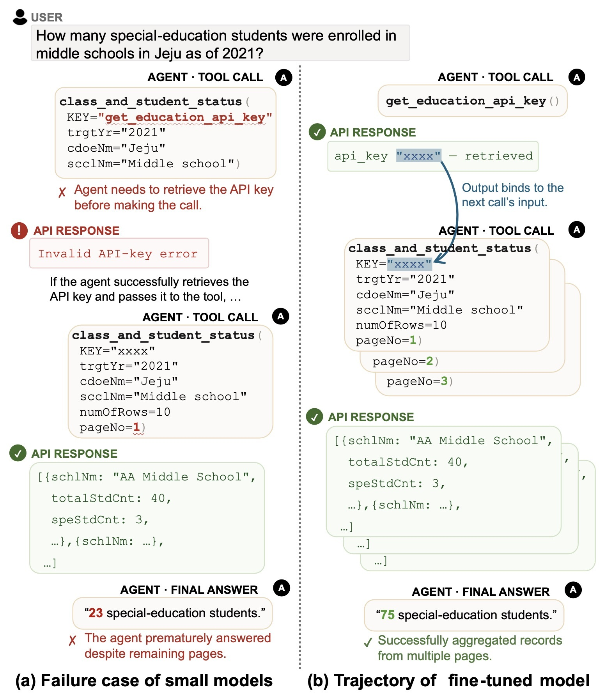
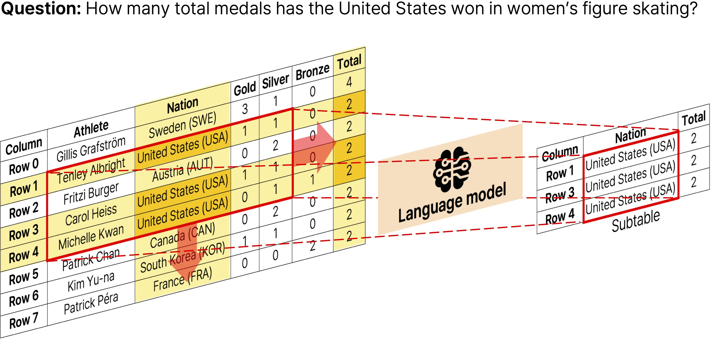

About
I am a Researcher at LG CNS Multi-Modal Intelligence Lab. I received my M.S. in the Graduate School of Artificial Intelligence (GSAI) at POSTECH. During my M.S., I was a member of the Machine Learning and Vision Group advised by Prof. Kwang In Kim. Previously, I received my bachelor’s degree in Statistics from Korea University (KU).
At LG CNS, I build synthetic training data and benchmarks for LLM agents as part of Korea’s Sovereign AI Foundation Model (a.k.a. 독파모) Project. My current interests include agentic AI, instruction following, and reinforcement learning with verifiable rewards.
Research
I am interested in agentic AI, with a focus on how data shapes what agents can do: synthetic data generation, verifiable rewards, and evaluation. I recently built a multi-step tool-calling benchmark and data-synthesis recipe over Korean public APIs, and the resulting data was used to train K-EXAONE 2.0. I am now building RLVR data for coding agents, focusing on instruction following in spec-driven development. Earlier, I worked on retrieval and reasoning over structured data such as tables.
Publications
-
EMNLP 2026 Industry Track (oral presentation)
Multi-Step Tool-Calling over Korean Open Public APIs: A Benchmark and a Data-Synthesis Recipe

-
ACL 2026
Piece of Table: A Divide-and-Conquer Approach for Selecting Subtables in Table Question Answering



* Equal contribution.
Experience
-
LG CNS
Jan 2026 to presentAI Researcher, Multi-Modal Intelligence Lab
- Contributing to Korea’s Sovereign AI Foundation Model Project as part of the LG AI Research consortium.
- Built synthetic multi-step tool-calling data that was used to train K-EXAONE 2.0.
- Building RLVR data for coding agents, focused on instruction following in spec-driven development.
-
MakinaRocks
Aug 2025 to Dec 2025Forward Deployed Engineer (Intern), FD Agent Team
- Developed a DBQA agent for a Software-Defined Factory project on an EV battery production line.
-
POSTECH
Sep 2023 to Aug 2025M.S., Graduate School of Artificial Intelligence
- Member of the Machine Learning and Vision Group, advised by Kwang In Kim.
- Worked on the Samsung Electronics DS AI Center and POSTECH project “Multimodal Foundation Model: Mitigating Hallucination with RAG Specialized for Semiconductor-Domain Data.”
-
AI Center, Korea University Anam Hospital
Sep 2022 to Jun 2023Research Assistant
- Studied pregnancy and prenatal predictors for the neurodevelopment of school-aged children.
-
Korea University
Mar 2017 to Aug 2023B.Econ., Department of Statistics
Gallery
-

EMNLP 2026
-

EMNLP 2026
-

ACL 2026